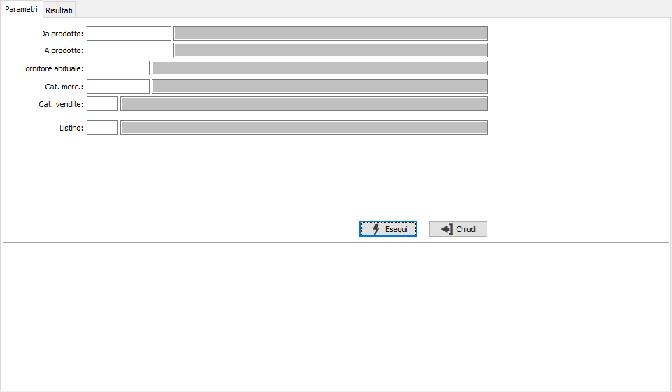
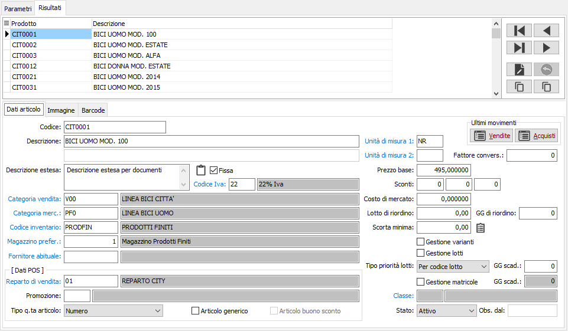
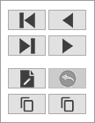
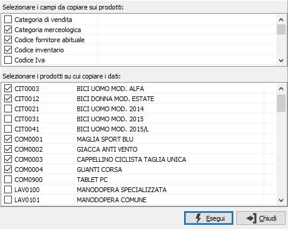
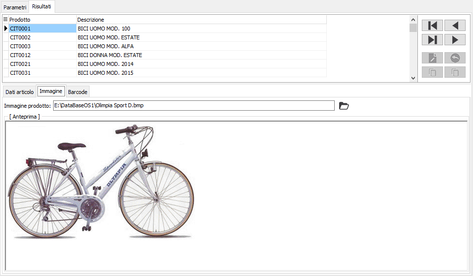
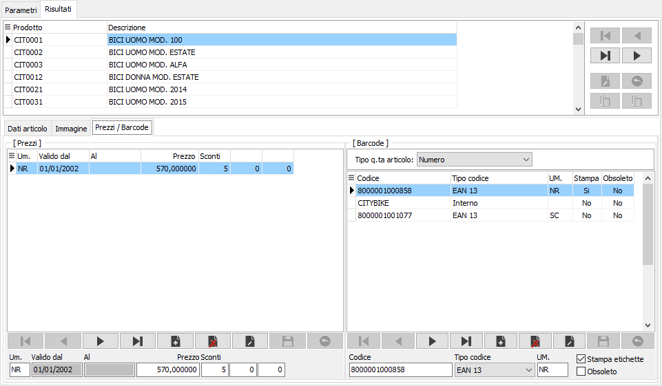

Manutenzione rapida articoli
La funzione è stata realizzata per venire incontro all’esigenza di codifica veloce di più gruppi di articoli e consente:
la selezione di un gruppo di articoli (in base ai filtri indicati) sui quali applicare in maniera diretta modifiche ai campi principali dell’anagrafica. E’ possibile estendere le informazioni di un prodotto ad una serie di altri articoli (ovviamente selezionabili manualmente);
la duplicazione di un prodotto esistente;
la gestione diretta dei prezzi sul listino prodotti;
la gestione diretta dei codici a barre.

La prima pagina è relativa alla richiesta dei parametri di selezione che possono essere inseriti per prodotto, categoria merceologica, categoria di vendita o fornitore abituale; se sarà inserito il codice listino sarà possibile manutenere i dati relativi ai prezzi degli articoli selezionati presenti sul listino.

La seconda pagina è relativa ai risultati ed è suddivisa in due aree principali:
la parte alta che riporta la griglia con i prodotti selezionati in base ai limiti inseriti ed un gruppo di pulsanti da utilizzare per le varie funzionalità;
la parte bassa che riporta una pagina relativa ai dati modificabili del prodotto selezionato nella griglia della sezione sopra, una pagina per l'immagine ed una pagina per i prezzi ed i codici a barre; quest'ultima pagina è visibile solo se impostato nella selezione parametri il codice listino o sono presenti delle codifiche per il prodotto selezionato. La pagina dei Dati articoli contiene solo i campi più "significativi", già presenti nelle varie linguette dell'anagrafica articoli, sono presenti anche i bottoni relativi all'analisi degli ultimi movimenti di acquisto/vendita.

La pulsantiera è divisa in due sezioni: quella sopra contiene i tasti relativi allo spostamento sulla griglia dei prodotti: primo ed ultimo, precedente e successivo.
La sezione sotto contiene il tasto Modifica ed il tasto Annulla; al momento in cui viene premuto il tasto modifica questo cambia immagine e funzionalità diventando un tasto Salva, il tasto Annulla mantiene la sua funzione.
Gli ultimi due tasti presenti sono il Duplica ed il Copia dati: il duplica ha la stessa funzionalità presente nell'anagrafica articoli ed attribuita ai tasti CTRL+N: crea una copia esatta del prodotto su cui si è posizionati lasciando vuoto solo il codice prodotto.
Il tasto copia dati consente di copiare, dal prodotto su cui si è posizionati, alcuni campi, selezionabili, su uno o più prodotti presenti nella selezione principale: alla pressione del campo compare la seguente finestra.

In questa finestra sono mostrati, nella parte alta, i campi che sarà possibile copiare e nella parte bassa i prodotti su cui sarà possibile effettuare la copia dei suddetti campi; apponendo le spunte nelle relative sezioni si decide quali campi copiare e su quali prodotti. è necessario ricordare che i prodotti presenti in questa finestra sono il risultato della selezione effettuata tramite i parametri iniziali e non sarà presente nell'elenco il prodotto da cui saranno copiati i dati, cioè quello su cui si era posizionati al momento in cui è stato premuto il pulsante "Copia dati".

La pagina dell'immagine contiene il percorso all'eventuale immagine collegata al prodotto ed un pulsante per selezionare il file di immagine di cui sarà mostrata un'anteprima nel riquadro; facendo clic destro sull'anteprima sarà possibile eliminare l'immagine dall'articolo.

La pagina Prezzi/Barcode, come detto in precedenza, è visibile solo in presenza di codifiche sull'articolo e/o se inserito un listino nei parametri di selezione; se presente il listino saranno mostrati i prezzi presenti e sarà possibile variare, inserire o cancellare i prezzi per data ed unità di misura del prodotto. Se presenti le codifiche saranno mostrati i dati già presenti e sarà possibile variare, cancellare quanto già presente oppure inserire nuove codifiche.